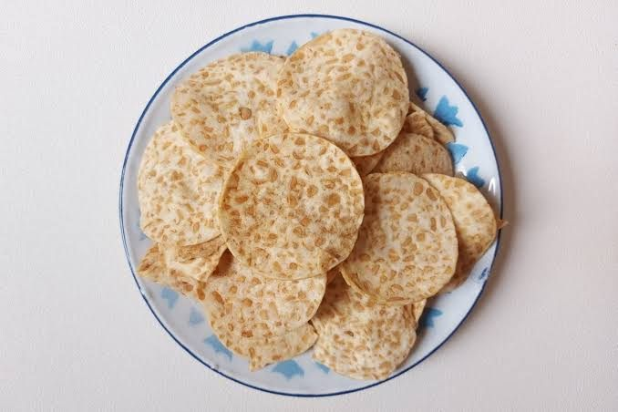

Keripik Tempe
Tempe diiris tipis, dibalut adonan bumbu, lalu digoreng sampai renyah. Produk utama usaha ini.
Rp12.000 / bungkus · 200 g
UMKM Keripik Tempe & Peyek · Bantul, DIY
Dibuat di Dusun Puton, Kalurahan Trimulyo, Kapanewon Jetis, Kabupaten Bantul. Halaman ini adalah media digital yang terhubung dengan QR Code pada kemasan.
Profil UMKM
UMKM Keripik Tempe “Rini” adalah usaha makanan ringan yang memproduksi keripik tempe dan peyek di Dusun Puton, Kalurahan Trimulyo, Kapanewon Jetis, Kabupaten Bantul.
Pemasaran dilakukan secara langsung dengan berkeliling di sekitar desa. Satu kali penjualan membawa 40 bungkus produk dengan harga jual Rp12.000 per bungkus, sehingga pembeli yang terjangkau masih di sekitar wilayah desa.
Untuk memperluas jangkauan, kemasan dirancang ulang menjadi metalized standing pouch full print yang dilengkapi QR Code. QR tersebut mengarah ke halaman ini, jadi informasi produk, komposisi, dan cara pemesanan dapat dibaca pembeli tanpa harus dicetak semua pada kemasan.
Resep, komposisi, dan proses produksi tetap seperti yang berjalan selama ini. Yang berubah hanya kemasannya.
Komposisi
Takaran bahan sesuai resep yang dipakai UMKM. Keripik tempe dihitung untuk 200 g tempe, peyek untuk 200 g tepung beras.
| Produk | Dasar takaran |
|---|---|
| Keripik Tempe | 200 g tempe kedelai |
| Peyek Kacang | 200 g tepung beras |
| Air adonan | Dituang bertahap sampai adonan pas, tidak terlalu encer |
| Minyak goreng | Secukupnya, adonan digoreng tipis |
Kemasan metalized membantu menahan cahaya, udara, dan kelembapan. Setelah dibuka, tutup kembali dan simpan di tempat kering supaya tetap renyah.
Kemasan Berbasis QR Code
QR Code dicetak langsung pada permukaan kemasan, bukan pada stiker. Isian halaman ini dapat diperbarui UMKM tanpa mencetak ulang kemasan.
Lihat bagian belakang kemasan, pada area yang tidak tertutup lipatan atau seal.
Arahkan kamera ponsel ke QR Code. Tidak perlu aplikasi tambahan.
Halaman ini terbuka. Lihat produk dan komposisinya, atau susun pesanan.
| Aspek | Keterangan |
|---|---|
| Bentuk | Metalized standing pouch, dapat berdiri |
| Material | Laminasi PET/Metalized/PE, food grade |
| Ukuran | Kisaran ±15 × 23 cm, menyesuaikan kapasitas |
| Isi | Berat bersih 200 gram |
| Penutupan | Heat seal, dapat dilengkapi zipper |
| Cetak | Full print: nama UMKM, nama produk, logo, gambar produk |
Kanal Pemesanan
Susun pesanan di bawah lalu kirim ke nomor usaha UMKM. Pemesanan ulang cukup memindai QR Code yang sama pada kemasan.